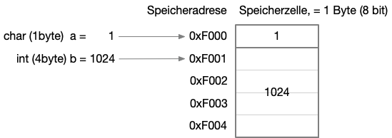
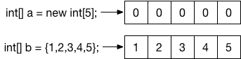
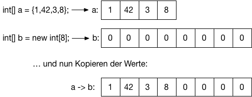
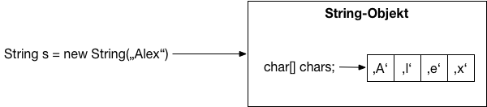
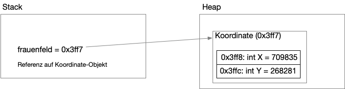

{% extends "../_base_template.html" %}
{% block title %}Lektion 2 - Grundlagen{% endblock %}

{% block sections %}
<section data-markdown >
<textarea data-template>
<i class="fas fa-graduation-cap"></i> Lektion 2 - Grundlegende Werkzeuge
=============================

Ziel der Lektion:

* Sie kennen den Unterschied zwischen skalaren und komplexen Datenstrukturen
* Sie kennen Arrays und wissen wie Sie diese in Java anwenden
* Sie wissen, wie Sie mit Java-Klassen komplexe Datenstrukturen definieren
* Sie kennen ein paar grundlegende komplexe Datenstrukturen: Arrays, Listen, Stack
* Sie können diese Konzepte in Java anwenden

</textarea>
</section>

<section data-markdown >
<textarea data-template>
<i class="fas fa-graduation-cap"></i> Grundlegende Werkzeuge für Algorithmen
=============================

Was ist nochmals ein Algorithmus?

> Ein Algorithmus ist eine eindeutige Handlungsvorschrift zur Lösung eines Problems oder einer Klasse von Problemen. Algorithmen bestehen aus endlich vielen, wohldefinierten Einzelschritten. [...]
> Bei der Problemlösung wird eine bestimmte Eingabe in eine bestimmte Ausgabe überführt.


Wir operieren also mit **Werkzeugen** (Einzelschritt) auf einer Art **Datenstruktur** (Ein-/Ausgabe). Wir benötigen somit ein paar Werkzeuge, damit wir Algorithmen programmatisch umsetzen können:

* Die zu verarbeitenden Daten kommen in einer bestimmten **Struktur**. Wir benötigen also genügend komplexe **Datentypen**, um die zu verarbeitenden Daten auch sinnvoll strukturieren zu können.
* Die Speicherung der Daten ist je nach Problemstellung anders zu lösen: Welche Gefässe oder **Datenstrukturen** sind für das **Speichern** unseres aktuellen Problems sinnvoll?
* Wir benötigen programmatische **Werkzeuge**, um die Daten zu bearbeiten: Wie operieren wir auf einer Liste, auf Zeichenketten, auf unseren Datenstrukturen?

</textarea>
</section>


<section>
<section data-markdown >
<textarea data-template>
<i class="fas fa-graduation-cap"></i> Datentypen
=============================

Die einfachsten Datentypen in Programmiersprachen nenn man **"Skalare Datentypen"**. Unter skalaren Datentypen versteht man Datentypen, die einen einzelnen Wert speichern können. Man kennt sie auch unter dem Begriff "primitive Datentypen".

> Ein Skalar ist eine mathematische Größe, die allein durch die Angabe eines Zahlenwertes charakterisiert ist<br />
(Wikipedia, https://de.wikipedia.org/wiki/Skalar_(Mathematik))

Ein Computer-Memory kann grundsätzlich "nur" Zahlen speichern,
ein Prozessor kann "nur" Zahlen verarbeiten. Dies sind also die **skalaren Datentypen**.
Alle weiteren Strukturen bauen auf diesen einfachen Datentypen auf.

Beispiel:



Was kennen Sie für skalare (= primitive) Datentypen in C, resp. Java? Zählen Sie auf!

</textarea>
</section>

<section data-markdown >
<textarea data-template>
<i class="fas fa-graduation-cap"></i> Datentypen
=============================

Wir kennen in Java z.B. folgende skalare Typen:

* int (Ganzzahlen)
* float (Gleitkommazahlen)
* char (einzelne Zeichen, resp. Bytes)
* boolean (Wahr / falsch, 2 Zustände)
* ... und noch ein paar mehr.

Folgende Datentypen sind bereits **nicht mehr skalar**, resp. einfach:

* Arrays (`int[] a = {1,2,3,4}`): eine Liste aus aneinandergereihten Datentypen
* Strings (`String s = "Hallo"`): eine Liste von Zeichen (chars)

<i class="far fa-hand-point-right"></i> Wir reden hier bereits von **Komplexen Datenstrukturen**,
oder **zusammengesetzten Datenstrukturen**: Dies sind Kombinationen aus einfacheren Strukturen.
<br />Beispiel: Ein **Koordinaten-Punkt** besteht aus einem **Breitengrad** (skalarer Typ) und einem **Längengrad** (auch ein skalarer Typ).
Wir können also sagen:

Oder: Der Datentyp **Koordinate** besteht aus:
  * `float Breite`
  * `float Laenge`

In Java können wir den Typ mit einer **Klasse** abbilden:

```java
public class Koordinate {
    public float laenge;
    public float breite;
}
```

<i class="far fa-hand-point-right"></i> mehr dazu später im Kapitel


</textarea>
</section>

<section data-markdown >
<textarea data-template>
<i class="fas fa-graduation-cap"></i> Datentypen - Arrays
=============================

Wir beschäftigen uns als Erstes mit **Arrays**. Dieser komplexe Datentyp wird von
Java bereits "von Haus aus" unterstützt.

<!-- <i class="far fa-hand-point-right"></i> Schauen wir uns **Arrays mit LEGO<sup>&reg;</sup>** etwas genauer an. -->

**Suchen wir gemeinsam Antworten zu folgenden Fragen**:

1. welche **Eigenschaften** hat ein Array (Oder: Was IST ein Array)?
1. wie sind Arrays **im Speicher** abgelegt?
1. können Sie Elemente an beliebiger Stelle im Array speichern? Wie?
1. können Sie Elemente an beliebiger Stelle im Array auslesen? Wie?
1. wie fügen Sie neue / **weitere Elemente** ein (mehr, als im Array platz haben?)
1. wie **entfernen** Sie Elemente aus dem Array (Kürzen den Array)?
1. welche Aktionen gehen gut (einfach, schnell), was geht nicht gut (kompliziert, langsam) mit Arrays?

<!-- Wir bilden dazu 2 Gruppen: Jede Gruppe erarbeitet Antworten zu diesen Fragen. -->

<i class="far fa-hand-point-right"></i> restliche Folien und Aufgaben im Selbststudium / Fragen von Ihnen beantworten!

</textarea>
</section>
</section>

<section>
<section data-markdown>
<textarea data-template>
<i class="fas fa-graduation-cap"></i> Arrays in Java
=============================

Arrays sind in Java bereits **komplexe Datentypen**, welche von der Sprache mit hilfreicher Syntax unterstützt werden.

Arrays sind "aneinandergereihte" Werte eines bestimmten Datentyps (skalare oder komplexe Typen): Sie sind im **Heap-Speicher** 
aufeinanderfolgend aneinandergereiht:

```java
int[] a = new int[5]; // erzeugt einen neuen Array mit int-Werten mit 5 Elementen im Heap
int[] b = {1,2,3,4,5}; // erzeugt einen neuen Array mit 5 vordefinierten int-Werten im Heap
```



Ein Array ist **immer zusammenhängen im Speicher abgelegt**. Es gibt keine Lücken zum nächsten Element.

**Array-Operationen**

```java
// Array erzeugen:
int[] a = new int[5]; // erzeugt einen neuen Array mit int-Werten mit 5 Elementen im Heap

// Werte des Arrays setzten:
a[2] = 3; // setzt den 3. Wert im Array (Achtung: Elemente beginnen bei Stelle 0!)

// einzelnen Wert auslesen:
int wert = a[3]; // liest den 4. Wert im Array aus und speichert ihn in einer lokalen Variable

// Anzahl Elemente ermitteln:
int laenge = a.length;
```
</textarea>
</section>

<section data-markdown>
<textarea data-template>
<i class="fas fa-graduation-cap"></i> Arrays in Java
=============================

**Erweitern / Vergrössern / Verkleinern von Arrays**

Ein Array kann NICHT vergrössert / verkleinert werden: Da Arrays im Speicher zusammenhängend
platziert sind, muss davon ausgegangen werden, dass der Speicher *hinter* dem Array bereits belegt ist.

Wenn Sie also einen grösseren Array brauchen, **müssen Sie einen neuen, grösseren Array anlegen,
und die Werte umkopieren**:



<i class="far fa-hand-point-right"></i> **Wie machen Sie das?**

In Java eignet sich dazu ein ganz einfacher **Algorithmus**, welchen Sie nun entwickeln können:

1. Erstelle einen neuen, grösseren Array
2. für jedes Element des alten Arrays:
    3. Kopiere den Wert des alten Arrays an die selbe Stelle im neuen Array

<i class="far fa-hand-point-right"></i> **Lösen Sie dazu die Aufgabe 1 - Array vergrössern - auf Moodle**

</textarea>
</section>

<section data-markdown>
<textarea data-template>
<i class="fas fa-graduation-cap"></i> Strings in Java
=============================

**Frage**: Strings gelten schon als komplexe Datentypen, sind also eine Zusammensetzung aus einfachen Datentypen.
Aus welchen Datentypen sind Strings zusammengesetzt, und wie?

**Antwort**: Strings sind, wie auch in C, Arrays aus `char`-Werten! Die String-Klasse bietet neben den Array-Methoden auch noch ein paar weitere
nützliche Eigenschaften. Unter anderem sind Strings in Java IMMER Read-Only! Sie können String-Objekte nicht mehr verändern.

```java
String s1 = "Alex"; // Erzeugt ein konstantes String-Objekt "Alex" im Heap, und gibt eine Referenz darauf zurück
String s2 = new String("Alex"); // Erzeugt ein NEUES String-Objekt, und gibt eine Referenz darauf zurück
```

Im Speicher sieht das dann so aus:



**Strings sind also schon komplexe Typen**. Der Typ  "String" in Java wird durch die `String`-Klasse definiert, die in etwa so aussehen könnte:

```java
public class String {
    // Ein Array für die einzelnen Zeichen:
    private char[] characters;

    // Methoden (Operationen) für den Typ:
    public int length() { ... }
    public char charAt(int i) { ... }
    ...
}
```

</textarea>
</section>

<section data-markdown>
<textarea data-template>
<i class="fas fa-graduation-cap"></i> Strings in Java
=============================

**String-Operationen**

Ein Datentyp (eine Klasse in Java) definiert auch die **Operationen** (Methoden in Java),
welche auf diesen Daten ausgeführt werden können. Beispielsweise definiert die String-Klasse
eine ganze Reihe nützlicher Operationen, um mit Strings zu arbeiten:

```java
// Länge eines Strings:
int laenge = s1.length();

// Zugriff auf einzelnes Zeichen:
char zeichen = s1.charAt(2); // 3. Zeichen, 'e'

// Array des Strings auslesen:
char[] zeichen = s1.toCharArray();

// Teilstring erzeugen:
String teil = s1.substring(1,3); // ergibt "le"
```
</textarea>
</section>
</section>


<section>
<section data-markdown>
<textarea data-template>
<i class="fas fa-graduation-cap"></i> Komplexe Datentypen
=============================

Reichen diese Datentypen für komplexe Probleme schon aus? Können Sie damit z.B. eine Struktur "Koordinaten (x/y)" abbilden?

Wir benötigen also ein Werkzeug, um aus einfachen Datentypen komplexere Datentypen zusammenzustellen.
Beispielsweise besteht ein Datentyp "Koordinate" aus zwei einfachen Zahlen-Werten für X und Y:

```
Koordinate:
   X: Ganzzahl
   Y: Ganzzahl
```

Wie können Sie diese Datenstruktur in Java abbilden?

</textarea>
</section>

<section data-markdown>
<textarea data-template>
<i class="fas fa-graduation-cap"></i> Komplexe Datentypen
=============================

In Java kennen wir aus der Objektorientierten Programmierung das Konzept der **Klassen**: Klassen sind "Baupläne" für später instanzierte (tatsächlich im Speicher vorhandene) **Objekte**.
Ähnlich wie der Bauplan eines Hauses (= Klasse) zu einem oder mehreren tatsächlich gebauten Haus (= Objekt) führt.

**Notiz:** Wir behandeln hier Java-Klassen sehr oberflächlich, für unsere Algorithmen optimiert. OO-Programmierung ist ein Kapitel für sich und wird Ihnen in einem separaten Modul beigebracht.

Klassen resp. Objekte bestehen aus folgenden Eigenschaften:

* Objekte haben Eigenschaften (= Daten, Werte)
* Objekte kennen Methoden, um Eigenschaften zu bearbeiten (= Funktionen).

In Java sieht unser Koordinaten-Typ dann so aus:

```java
// Name der Klasse:
class Koordinate {

    // öffentlich (= "von aussen") sichtbare Eigenschaften:
    public int X = 0;
    public int Y = 0;

    // Methode, welche mit den Daten "etwas tut":
    public String out() {
        return "X: " + this.X + ", this.Y: " + Y;
    }
}
```

Wir haben also bereits einen komplexen Datentyp modelliert, welcher aus einfachen, skalaren Typen zusammengesetzt ist.
</textarea>
</section>

<section data-markdown>
<textarea data-template>
<i class="fas fa-graduation-cap"></i> Komplexe Datentypen
=============================

**Verwendung**:

Nun können wir den neuen Datentyp in unserem Java-Programm verwenden:

```java
// Erzeugen einer Instanz unseres Datentyps (Neues Objekt aus Klasse erzeugen):
Koordinate frauenfeld = new Koordinate(); // Referenz auf Objekt 'frauenfeld' von Klasse 'Koordinate'

// Setzen von öffentlichen Werten:
frauenfeld.X = 709835;
frauenfeld.Y = 268281;

// Anwenden von Funktionen:
System.out.println("Koordinaten Frauenfeld: " + frauenfeld.out());
```



Kennen Sie weitere komplexe Datentypen, die in Java schon vordefiniert sind?


</textarea>
</section>
</section>

<section>
<section data-markdown>
<textarea data-template>
<i class="fas fa-graduation-cap"></i> Klassen/Objekte als komplexe Datentypen
=============================

Wir können unser Wissen nun bereit kombinieren:

**Array aus komplexen Datentypen:**

```java
Koordinate[] koordinaten = new Koordinate[5];
koordinaten[0] = new Koordinate();
koordinaten[1] = frauenfeld; // siehe letzte Folie
```

**Komplexe Datentypen mit Arrays als Eigenschaften:**

```java
class Noten {
    public float[] noten = new float[10];
    public float summe() {
        float s = 0;
        for(int i = 0; i < this.noten.length; i++) {
            s = s + this.noten[i];
        }
        return s;
    }
}

Noten n = new Noten();
n.noten[0] = 5;
n.noten[2] = 4;
// ...
float schnitt = n.summe() / n.noten.length;
```
</textarea>
</section>
</section>

<section>
<section data-markdown>
<textarea data-template>
<i class="fas fa-graduation-cap"></i> Stack
=============================

Eine etwas konkretere komplexe Datenstruktur, welche immer wieder benötigt wird, ist ein "Stack":

Ein Stack ist ein Container für einzelne Werte / Objekte nach dem Prinzip "First In Last Out":

* man kann Elemente hinzufügen (Push) Diese werden intern "übereinandergestapelt"
* man kann jeweils ein Element zurückholen (Pop): Es wird das zuletzt hinzugefügte zurückgegeben und aus dem Stack entfernt.


</textarea>
</section>


<section data-markdown>
<textarea data-template>
<i class="fas fa-graduation-cap"></i> Stack
=============================

Eine Stack-Klasse bietet also die Funktionen **`push()`** und **`pop()`** an, und könnte etwa so aussehen:

```java
public class Stack {
    /** Stack mit 20 Plätzen: intern wird ein Array initialisiert: */
    private int[] stackArray = new int[20];

    /** Index des "obersten" Elementes im Stack: */
    private int topIndex = 0;

	/** Die Funktion pop() gibt uns das oberste Element zurück */
    int pop() { ... }

	/** Wir wollen etwas (ein int) im Stack ablegen/speichern */
    void push(int x) { ... }

	/** Gibt einen Boolean zurück ob der Stack leer ist oder nicht */
    boolean isEmpty() { ... };
}
```

... und anwenden können wir ihn so:

```java
public class Main {
    public static void main(String[] args) {
        Stack s = new Stack();

        s.push(5);
        s.push(3);
        s.push(8);

        s.pop(); // 8
        s.pop(); // 3
    }
}
```

<i class="far fa-hand-point-right"></i> Sie sehen hier eine **Datenstruktur** Stack, 
welche Operationen zu unserem Typ mit anbietet.

</textarea>
</section>
</section>

<section data-markdown>
<textarea data-template>
<i class="fas fa-flask"></i> Aufgaben / Übungen zu Arrays und Datenstrukturen
=============================


Lösen Sie die **Hausaufgaben auf Moodle**:

* Aufgabe zu Arrays (3 Aufgaben)
* Aufgabe zu komplexen Datentypen (2 Aufgaben)

**Bonus-Aufgaben auf Moodle, wer noch etwas mehr machen will** (keine Hausaufgaben):

* Aufgabe Stack-Implementation
* Übung Arrays 4: 2-dimensionales Array Aufgabe 
* Aufgabe 2 zu komplexen Datentypen: Array-Wrapper (Array "verpacken" mit nützlichen Zusatzfunktionen wie vergrössern)
* Übung Arrays: Durchschnitt Aufgabe 

</textarea>
</section>
{% endblock %}
